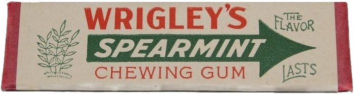

BRIBING PEOPLE WITH GUM FOR A JOB
I seem to always be in need of a job. To make my application stand out I decided to run an experiment where I offered a stick of gum just for reading my resume. The experiment failed miserably.
Here’s a youtube video of me reading the letter:
And here’s the cover letter in full.
SUBECT A STICK OF GUM FOR YOU, NO QUESTIONS ASKED
You have read the subject correctly. I am leading with a life sized PNG image of what I’m talking about so there can be no ambiguity what the stakes are as you read this email.

Hello, My name is Scott Williams. I’m a Software Developer that has applied for a position with [REDACTED]. I am reaching out with this cover letter in the hopes that it will make my application stand out from the pile of passionless automatons that you are no doubt wading through right now.
I first encountered [REDACTED] as a customer when I integrated Subscriptions into our Flutter application Action House which was released for iOS and Android. You’re product offering really addresses a serious pain point that developers have come to know too well. I’ve been a huge fan of [REDACTED] for the last 4 months following you guys on Facebook and reading through occasional articles… Then I saw that you were hiring for some of my skill sets so I thought I would apply.
I think I would be a great asset to [REDACTED] and the job would be a fun challenge for me. I bring 20 years of frontend and backend java programming to the table as well as linux system administration. I have released several Android Apps into the app store. I have also released occasional iOS products, but Android (and now Flutter) are my strong suits. I am also very strong in Kubernetes, Docker and Postgres Dev/Ops. etc. I am interested in the SRE position or work as a mobile application developer (perhaps offering a hybrid skill set that you need.)
Attached is my resume for your review. You can also see my (very old) website with some past projects at http://uberscott.com
But back to the matter at hand, because I know you want the stick of gum. Here is the deal: All you have to do is the following: Skim through my resume for 30 seconds lean back in your chair and close your eyes For just a moment imagine the impact it would have on your company if you hired me (good or ill… i’m not trying to persuade you, that’s for you to decide) Respond to this email with your address I will then mail you a stick of gum NO QUESTIONS ASKED. * ** ***
* It may take a couple weeks for the gum to arrive
** The gum may not look exactly like what is picture in the email, but I will try to get something as close to it as possible
*** I cannot control how the US postal service will handle the standard envelope I intend to use so the condition of the gum may be a little worse for wear (of course you will still be better off than having no gum at all)
Thank you for your time.